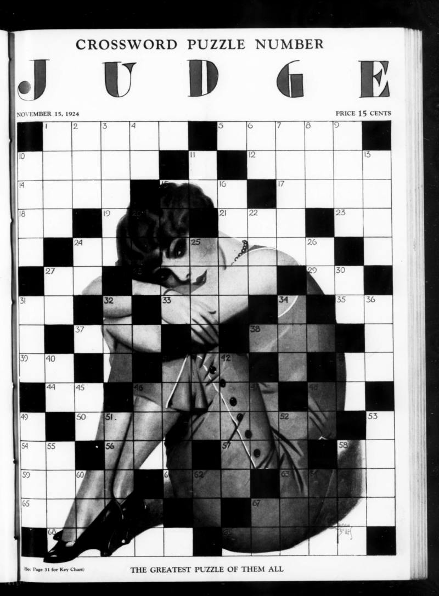

Bringing old crosswords back
Most crosswords from before the 1940s survive only as page scans: you can look at them, but not search or study them. We're turning them into xd files, an open text format, so they can join the public crossword archive and be solved again.
OCR built for this project has made a first draft of every puzzle. Volunteers donate spare Claude usage to check each draft against the scan, square by square and clue by clue, and get to solve the puzzle they restored.
Donate your spare Claude usage
Loading progress…
Contributors
Loading…